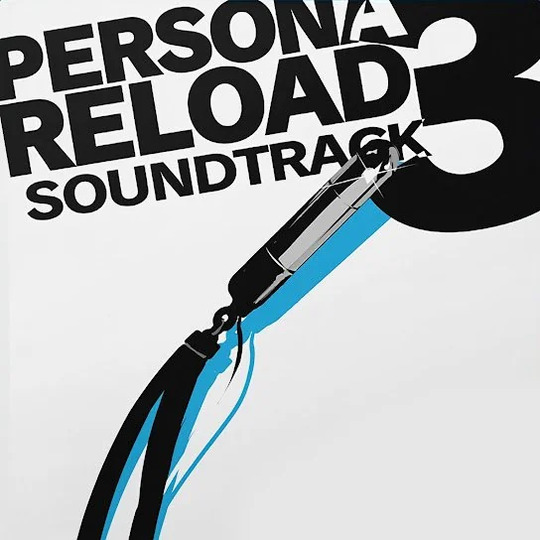
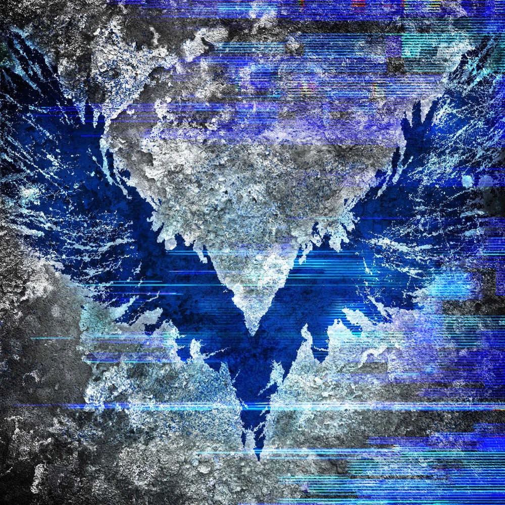
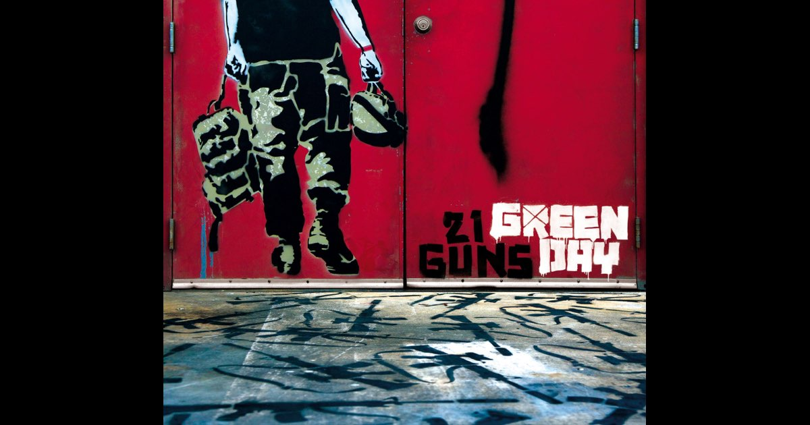
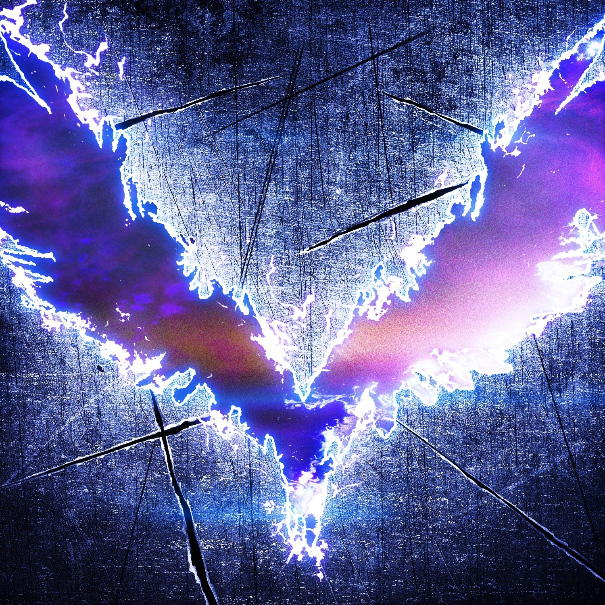
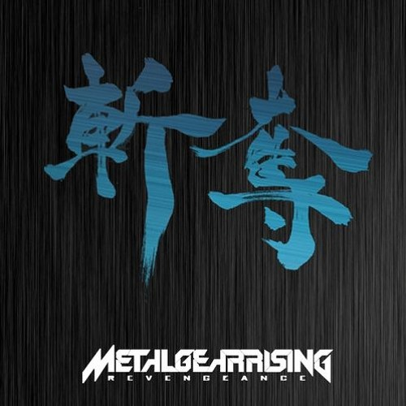
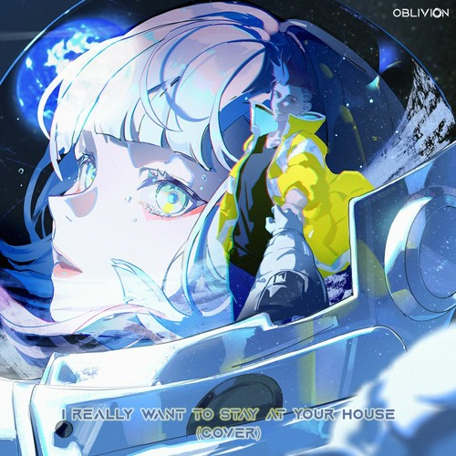

My Beats

A smooth late-night city pop track that captures dorm life calm and emotional vulnerability beneath youthful confidence.
The iconic battle theme that mixes rap-rock and dramatic orchestration, symbolizing rebellion against fate.
High-energy combat anthem with heavy bass and rap verses. Stylish, chaotic, and instantly recognizable.
A modernized battle theme blending funk rhythm and rap, emphasizing urgency and confidence.
Upbeat school-life theme reflecting youth, routine, and the quiet growth between battles.

Jazz-funk rebellion anthem played during heists. Represents boldness, defiance, and transformation.
Stylish ambush theme with slick vocals and groove-heavy basslines.
Laid-back lounge theme reflecting hidden emotions and loneliness behind public personas.
Disco-inspired palace theme with elegant rhythm and playful sophistication.
Climactic boss theme representing growth, unity, and unwavering belief in change.

Indie-pop love confession exploring insecurity and emotional dependency.

Explosive rock anthem symbolizing inner power, transformation, and embracing one’s true strength.

Fast-paced political punk rock criticizing media culture and societal division.

Melancholic anthem about isolation and walking alone despite crowds.

Emotional rock ballad about surrender, regret, and reconciliation.

Personal and emotional tribute to loss, grief, and the passage of time.

Romantic rock ballad about devotion, longing, and emotional presence.

Dreamlike alt-rock track expressing emotional numbness and quiet disappointment.

Atmospheric indie ballad about memory, regret, and unresolved feelings.

Epic metal opera of identity and legacy. Dramatic, emotional, and overwhelmingly powerful.

High-speed metal track mirroring Raiden’s conflict between justice and violence.
Emotional final boss theme exploring ideology, sacrifice, and moral contrast.

A modern alternative-metal anthem about responsibility and leadership under pressure.

Aggressive yet melodic metal hit dealing with judgment, self-righteousness, and faith.
Heavy metal anthem criticizing societal disorder and media manipulation.

Emotional synth-pop track that became iconic for its heartbreaking association with love and loss in a dystopian world.